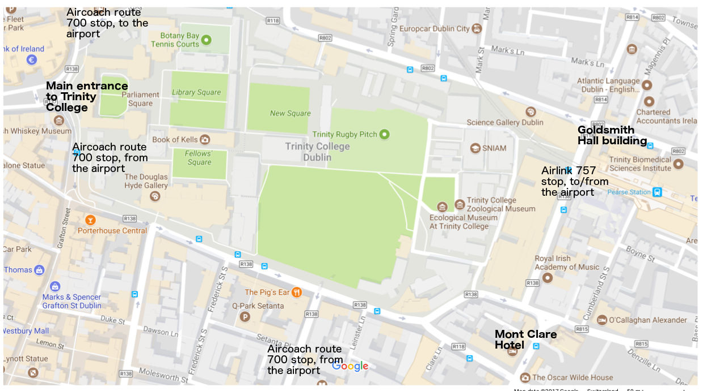

Host Institution: Hamilton Mathematics Institute
The workshop will be hosted by Hamilton Mathematics Institute, Trinity College Dublin.
Monday: Room 1A, Goldsmith Hall, Pearse Street
The entrance to Goldsmith Hall is in Pearse street, just at the Westland Row corner (see the map below). Once in the building, take the stairs (directly on the right as you enter; the entrance to the room is above the security booth).Tuesday-Friday: Yeats Suite, Mont Clare Hotel, Merrion Square
To access Yeats Suite, enter the hotel (see the map below for location), walk a few steps towards the check-in desk, turn left and take the stairs down one level, which brings you directly to the entrance to the Yeats Suite.Map of important locations
